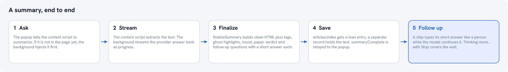

From a Bookmarklet to 2.0: What AI Summary Helper Actually Is Now
It started as a one-click bookmarklet for reading on a Kindle. Two years and a full rebuild later, most of what it does today didn't exist yet when the first hundred people signed up.
AI Summary Helper is a free, open-source Chrome extension that summarizes any web page using your own AI provider or a fully local model, saves articles for later with timed reminders, and turns your reading history into a searchable, connected archive. None of that existed in the first version. Here's what did, and how it got from there to here.
How this actually started
In July 2024, this was a bookmarklet — not even an extension. You'd hunt down interesting articles, open a dozen tabs, and, like almost everyone, never get around to reading most of them. The original pitch was narrow and personal: a custom-prompt summarizer that inserted its output directly into the page, so the summary could ride along when you sent the article to a Kindle using Reabble's Send-to-Kindle tool. That was the whole product. One AI provider. One prompt field. A bookmarklet variant that worked anywhere, even iOS Safari, and a Chrome extension variant for people who wanted the prompt adjustable on the fly.
It crossed 100 active users a few weeks later — genuinely surprising, since it had been built to solve one person's own reading habit, not to be a product.

What actually changed between then and 2.0
The core idea — summarize on your terms, read it somewhere better than a browser tab — never changed. Almost everything around it did:
One provider became your choice of five
v1 was OpenAI-only, your key, one endpoint. 2.0 supports OpenAI, Google Gemini, Mistral, and DeepSeek with your own API key, plus a fully local option through Ollama — meaning page content never has to leave your machine at all if you don't want it to. There's also an optional hosted tier (byphil Cloud) for people who'd rather skip key management entirely, but it was never made mandatory. That wasn't a small feature addition; it changed what kind of product this is. v1 asked you to trust one company with your content by default. 2.0 doesn't ask you to trust anyone you didn't choose.
"Insert into the page" became an actual workflow
The original insight — read it later, somewhere calmer than a browser — is still here, but it's no longer just a summary pasted into the DOM. Right-clicking a page now offers Summarize & Close Tab: pick a timeframe (Tomorrow, Weekend, This Week, Research Session), add a note, and the tab closes itself once you've sped through the summary in an RSVP overlay. A Chrome notification brings you back to it exactly when you asked to be — not "eventually," not "whenever you remember."
A pile of saved articles became something you can actually navigate
v1 had no history at all — the summary lived on the page and then it was gone. Every saved article now lives in a local, searchable archive, with text highlighting (plus AI-suggested "ghost" highlights on key passages), a reading-analytics heatmap, and a D3 knowledge graph that clusters what you've read by topic instead of leaving it as an undifferentiated list.
Kindle was the whole point. Now it's one option among several
Send-to-Kindle via Reabble's tool was the entire reason this existed. It's still supported natively, but reading away from your browser now also means AirDrop to an iPhone or iPad (opens straight in Apple Books) or LocalSend to something like KOReader over your own Wi-Fi. The underlying instinct — get it off the browser, onto something built for reading — just has more paths now.
What didn't change
It's still free, still open source (MIT-licensed, full code on GitHub), and it still doesn't require an account for any core feature. That part was never up for negotiation — it's the same reason v1 existed as a bookmarklet in the first place: built by someone who wanted to own their own reading tool, not rent one.
FAQ
Is this the same project as the original bookmarklet?
Yes — same open-source project, same GitHub repo, continuously developed since July 2024. The bookmarklet variant still exists for anyone who wants a browser-agnostic option with zero install.
Do I need an OpenAI account to use it?
No. That was true in v1; it hasn't been true for a long time. Any supported provider works, or a fully local model through Ollama with no external account at all.
What happened to the Gumroad version?
The project started there as a way to accept support from early users. The extension itself has always been free and open source — Gumroad was never a paywall for the tool.
AI Summary Helper is a free Chrome extension.
Add to Chrome